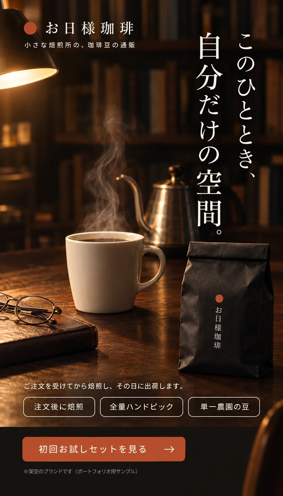
初回お試しセットを見る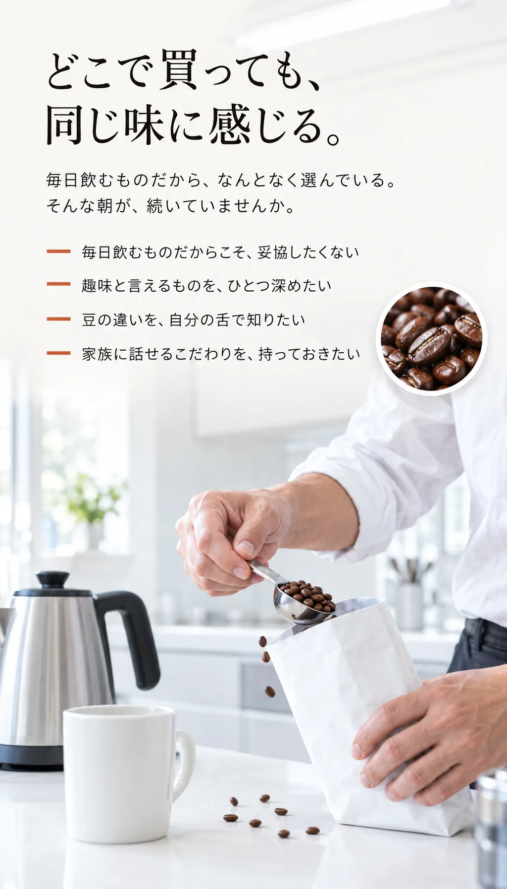
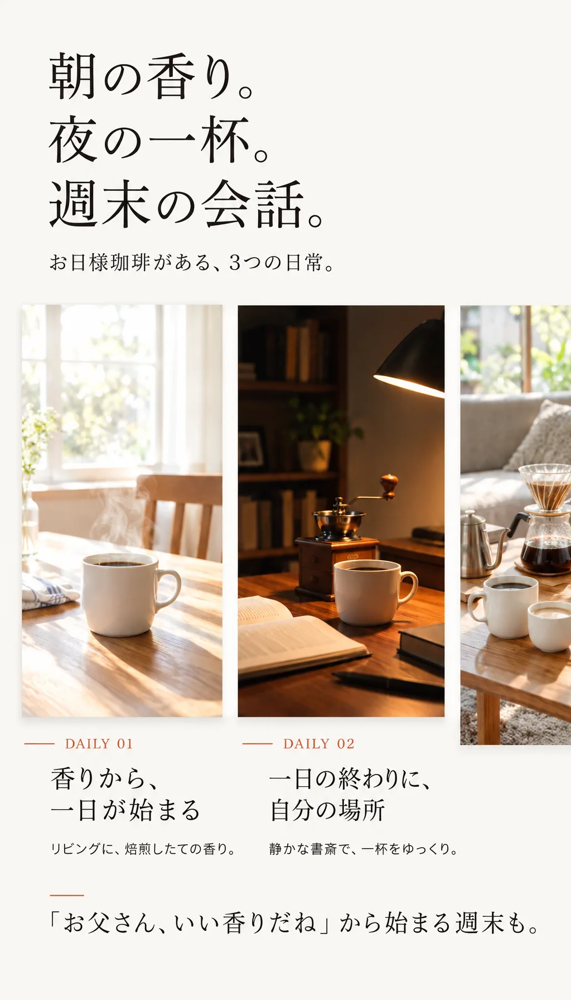
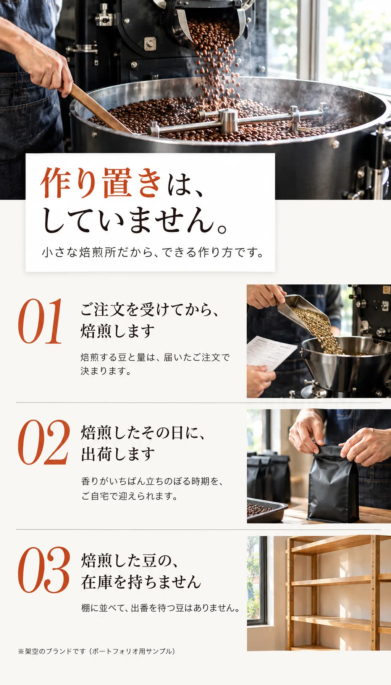
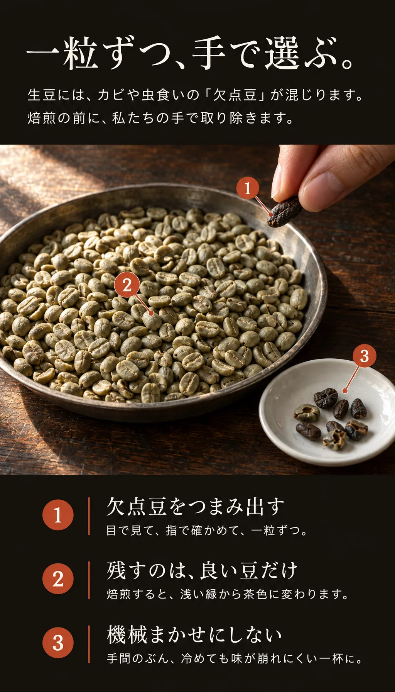
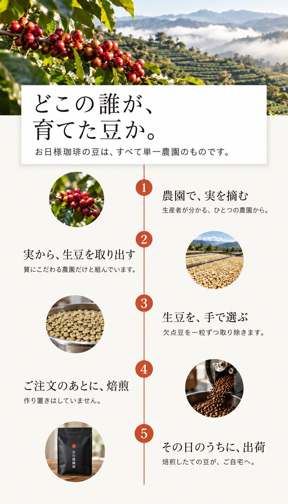
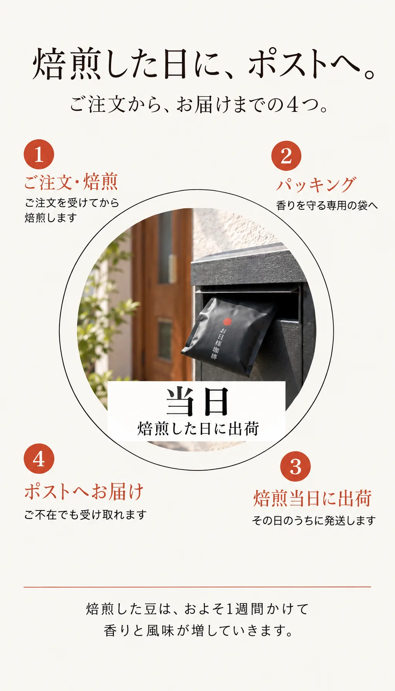
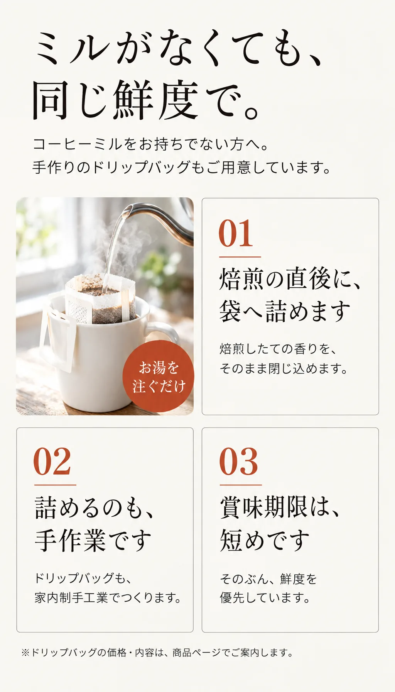
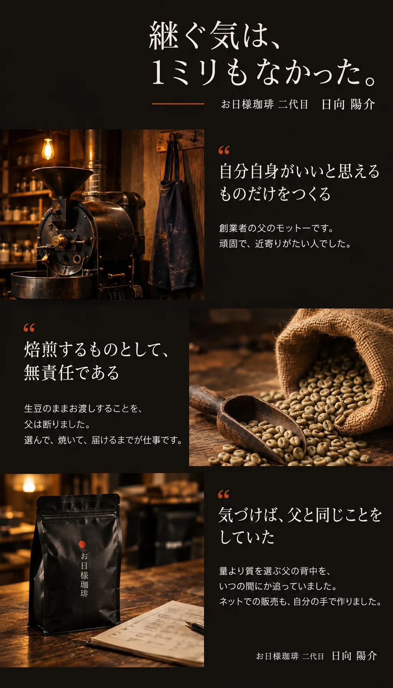
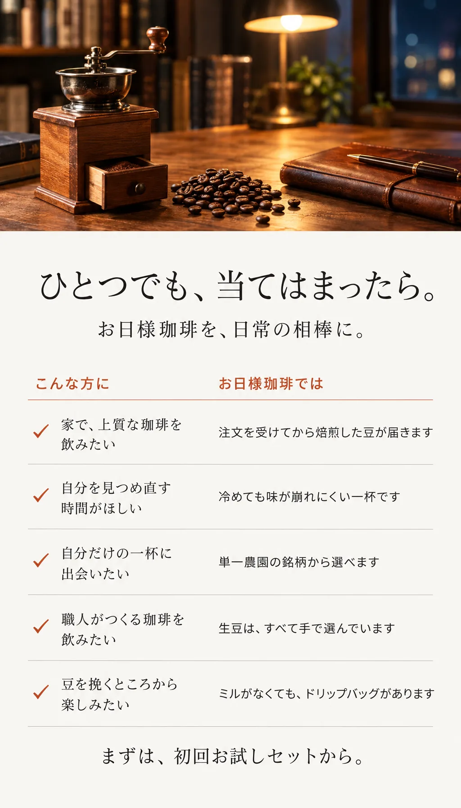
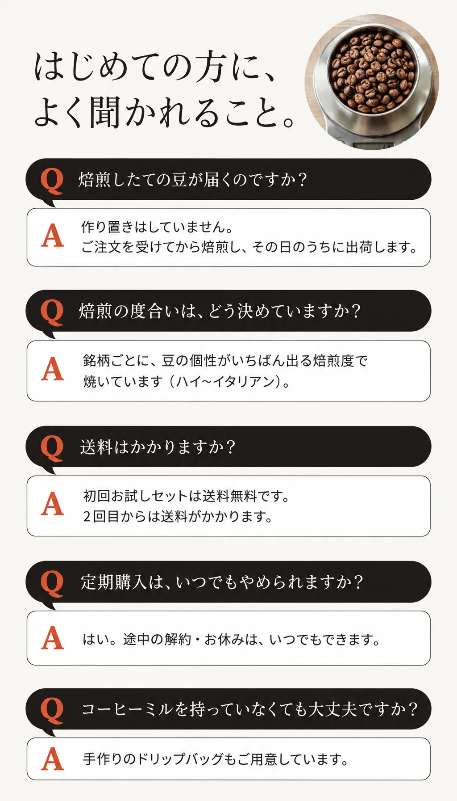
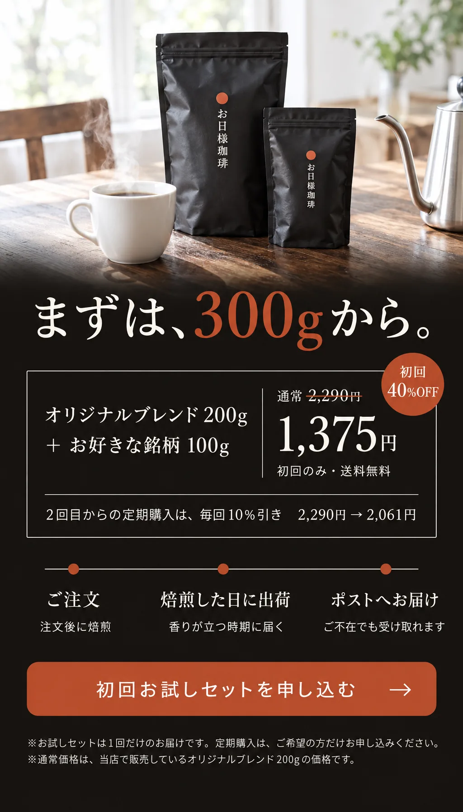
初回お試しセットを申し込む初回お試しセットを申し込む
オリジナルブレンド200g＋お好きな銘柄100g、1,375円（送料無料）。
お届けは1回だけです。定期購入は、気に入っていただけた方だけお申し込みください。
このページはポートフォリオ用のサンプルのため、申込フォームはつながっていません。
実案件では、ここに【購入ページのURL】が入ります。
販売者
| 屋号 | お日様珈琲 |
|---|---|
| 代表 | 日向 陽介（二代目） |
| 所在地 | 〇〇県〇〇市〇〇1-2-3 |
| 送料 | 初回お試しセットは無料。2回目以降は【送料】 |
| 定期購入 | 2回目以降、毎回10%引き。途中の解約・休止はいつでも可能 |
| お届け | ご注文を受けてから焙煎し、焙煎した日に出荷。ポストへ投函 |
※上記はすべて架空の設定です。実案件では、特定商取引法に基づく表記・プライバシーポリシーへのリンクが入ります。
※写真はすべてAIで生成したイメージです。